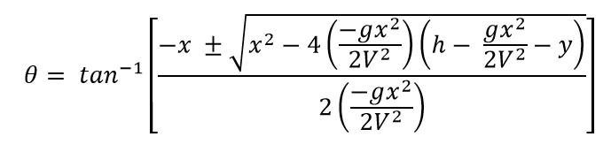
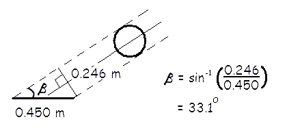
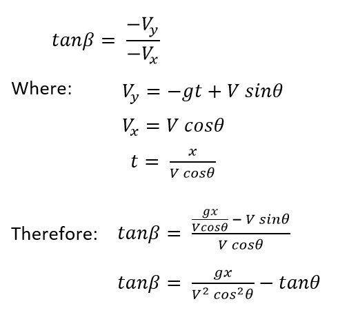

Mathematical Modeling
There is a fundamental difference between modeling and using a model. We solved projectile problems in an earlier lecture and that was an example of using a mathematical model of an object moving under the influence of gravity. In this lecture we will demonstrate the process of modeling which is a useful skill when attempting to solve more complex problems.
Process of Modeling:
Step 1 - Identify the problem
Step 2 - Formulate the model
Step 3 - Investigate the model
Step 4 - Validate the outcome
Step 5 - Update the model if necessary and go to Step 3
We can see that the process of modeling is a continuous process that is always seeking improvements to increase validity. Let's demonstrate this process with an example.
Example Problem:
How accurately does the basketball player need to throw the ball in order to score from the free-throw line?

Given information:
Professional players claim that it is easier to replicate the velocity rather than the angle of release.
height of the rim = 3.05m
distance from free-throw line to rim center = 4.60 m
basketball diameter = 0.246 m
rim diameter = 0.450 m
Step 2:
Our first attempt to formulate the mathematical model will be to develop a solution of release angle for a given release velocity. We will start with our equations of projectile motion.

These are the six equations of projectile motion assuming no air resistance. They represent the accelerations, velocities and displacements of the basketball as functions of time.
We will use the horizontal displacement [6] and vertical displacement [3] equations to eliminate the variable of time (t) and yield one equation that will tell us the required trajectory (θ) for any value of h and V.

We start with equation [6] and rearrange it to isolate "t" on the left hand side.
We then take equation [3]...
and substitute for t that we obtained from equation [6].
Simplifying the second term by canceling V and using tanθ.
Now we use a trigonometric identity to eliminate cosθ.
This yields a quadratic equation that allows us to solve for θ.

This equation allows us to find the release angle for any initial shooting position (x and h), basket height (y) and initial velocity (V) of the shot.
Step 3: In order to investigate the model, we will take the example of a free throw from the line (x=4.60m) at a release height of 2.15m (h) and a velocity of 8.0 m/s (V). The height of the basket is 3.05m (y) and g = 9.81 m/s2.
Substituting these values into the above equation results in theta = 36.6 or 64.5 degrees. Are both values correct?
Step 4: In order to validate the model, we could have the player shoot the ball at both angles and see if both are successful. If we did this, we would find that the 36.6 degree angle is too low and the ball strikes the front of the rim before the center of the ball can go through the center of the hoop. As the ball approaches the hoop, it "sees" it as an ellipse rather than a circle unless it is falling straight down. For the ball to go through the ellipse, the semi major axis must be at least as large as the ball diameter of 0.246m.

The semi major axis is dependent on the angle of entry (Β). We can find the minimum value for Β by calculating the inverse sine of the ball diameter divided by the hoop diameter.

We can determine the angle of entry into the basket by using the equations on the left and knowing initial velocity, angle and horizontal distance.
We can now calculate the entry angle (Β) for each trajectory (θ). Using θ = 36.6 degrees, we get Β = 19.36 degrees which is less than the minimum 33.1 degrees required to go through the hoop. Using θ = 64.5 degrees, we get Β = 59.6 degrees which will successfully go through the hoop.
How much over/under shoot is allowed?
How much lateral deviation could be tolerated?
Other things to be included in the model:
- air resistance effects
- contact of ball with the rim and/or backboard
- coefficient of restitution
- effects of spin on flight and rebound